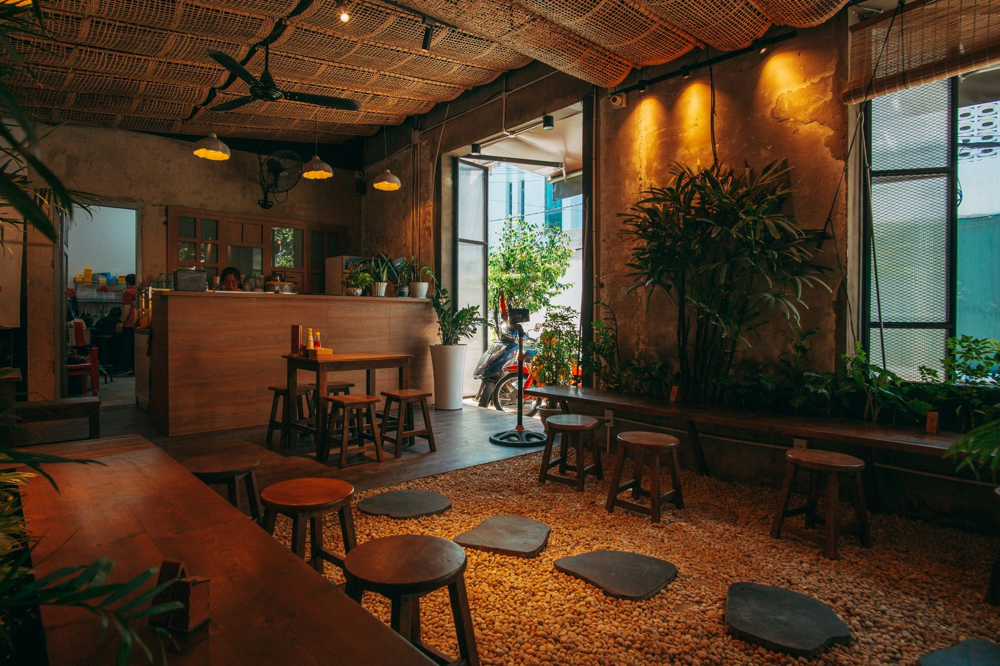
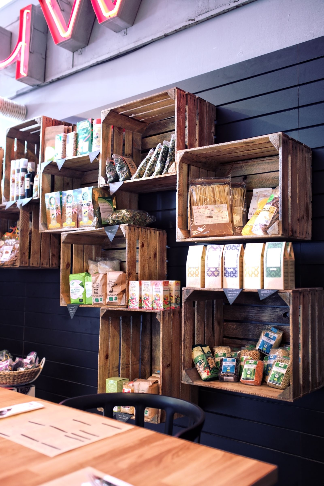
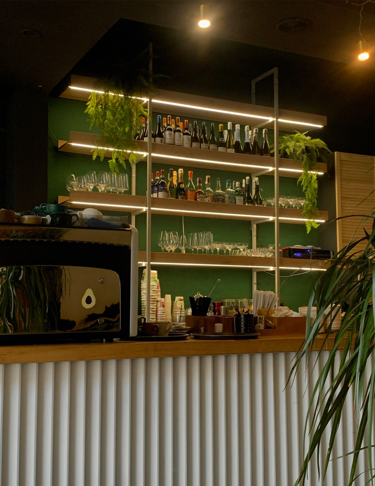
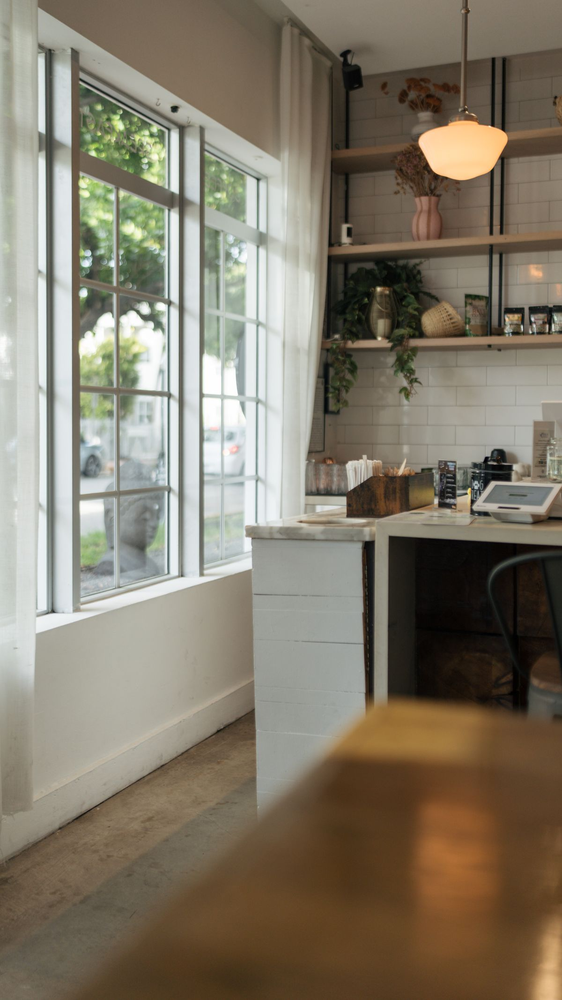
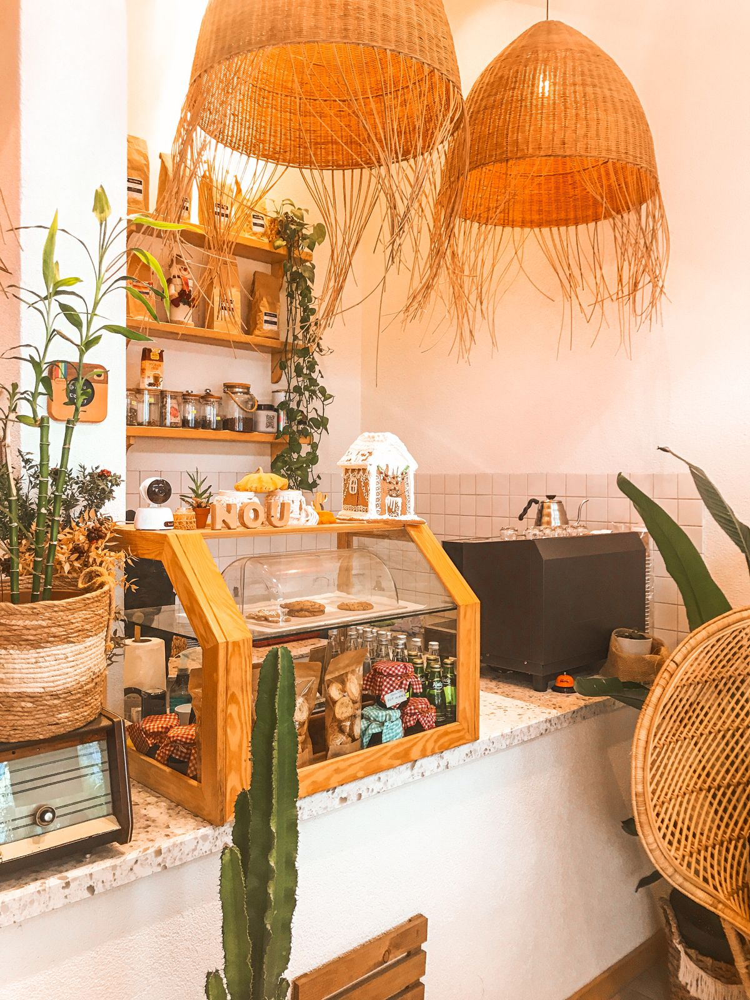

Concept
静けさの中で、
本来の美味しさを。
Sobrio(ソブリオ)は、イタリア語で「質素・上品」を意味する言葉です。
派手さよりも、素材そのものが持つ味わいと、ゆったりと流れる時間を大切にしたいという想いから、この名前をつけました。
契約農家から届く旬の有機野菜、丁寧に焙煎した豆で淹れるコーヒー、国産小麦の自家製パン。
添加物に頼らない、素材本来の力を感じていただけるメニューを、落ち着いた大人の時間とともにお届けします。
- 契約農家から届く有機野菜を使用
- 自家焙煎コーヒー豆で淹れる一杯
- 国産小麦・無添加にこだわった自家製パン
Interior
店内のご紹介



Access
店舗情報
- 店名
- Sobrio(ソブリオ)
- 住所
- 〒150-0001
東京都渋谷区神宮前5-1-1 グリーンヒルズ1F - 営業時間
- 8:00 - 19:00(L.O. 18:30)
- 定休日
- 毎週水曜日
- 電話番号
- 03-1234-5678
- アクセス
- 東京メトロ「表参道」駅 徒歩6分
Contact
お問い合わせ・ご予約
ご来店のご予約、貸し切りに関するお問い合わせはこちらから承っております。